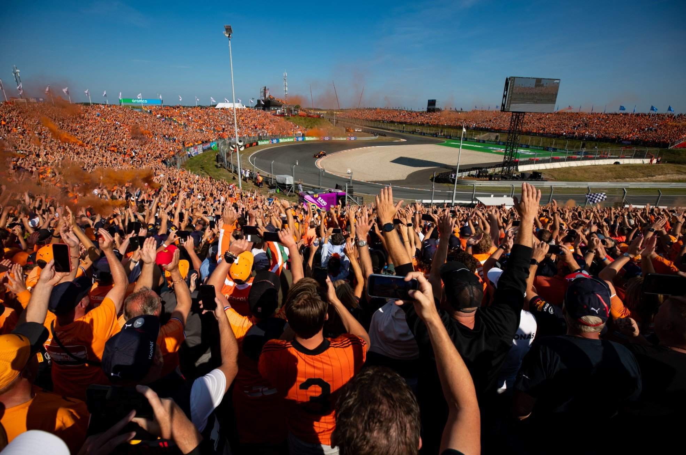

Verleden
Er werden in Zandvoort tijdens de jaren 1930 stratenracewedstrijden gehouden op de klinkerweg in de plaats.
Tijdens de Duitse bezetting van Nederland werd er een lange rechte weg door de plaats aangelegd, die later werd
samengevoegd en verbreed met andere wegen tot een racecircuit. De eerste race vond plaats in 1948 en heette toen
nog Grand Prix van Zandvoort. Vanaf 1950 werd de race de Grand Prix van Nederland (Dutch Grand Prix) en vanaf
1952 maakte deze race deel uit van het officiële Wereldkampioenschap Formule 1. Tot halverwege de jaren 80 werd
de Grand Prix van Nederland jaarlijks gehouden. De wedstrijd stond bekend om de vaardigheden van de coureurs die
werden getest in de Tarzanbocht en om de aanhoudende protesten van milieubewegingen.
Heden
De Grand Prix van Nederland (Dutch Grand Prix) werd van 1950 tot en met 1985 gehouden en was onderdeel van het
wereldkampioenschap Formule 1. Van 1986 tot 2019 was de race niet opgenomen in het wereldkampioenschap. In 2020
zou de race na een afwezigheid van 35 jaar terugkeren op de kalender onder de naam "Heineken Dutch Grand Prix",
maar vanwege de coronapandemie werd het evenement uitgesteld tot 2021. In december 2022 tekende de organisatie
van het circuit een contract met de FOM om de race te kunnen organiseren tot en met 2025.

Het Circuit
Het circuit van Zandvoort in Nederland heeft een lange geschiedenis van het organiseren van autoraces. De eerste
plannen voor een circuit in Zandvoort dateren uit 1930 en op 3 juni 1939 werd de eerste autorace gehouden op een
stratencircuit in Zandvoort. Ondanks het uitbreken van de Tweede Wereldoorlog bracht het succes van deze races de
burgemeester van Zandvoort ertoe om plannen te ontwikkelen voor een permanent circuit. Met hulp van Prins Bernhard
mocht de aanleg van het circuit doorgaan en werd op 7 augustus 1948 de eerste race gehouden, de Grand Prix van
Zandvoort genaamd. De race werd gewonnen door de Thaise prins Bira in een oude Maserati, met Tony Rolt en Reg
Parnell worden tweede en derde. Het jaar daarop werd de race verreden volgens de Formule 1-regels en werd gewonnen
door Luigi Villoresi in een Alfa Romeo. De Grand Prix van Zandvoort werd in 1950 officieel de Grand Prix van
Nederland en in 1952 onderdeel van het Wereldkampioenschap Formule 1. De Grand Prix van Nederland werd bijna
jaarlijks gehouden, op enkele uitzonderingen na, tot halverwege de jaren tachtig. Het staat bekend om zijn
uitdagende parcours, waaronder de Tarzanbocht-bocht en de Dries van der Lof-haarspeldbocht, en om zijn
geschiedenis van spannende races en memorabele momenten.
Sea Of Orange
De kijkcijfers blijven maar stijgen en de Nederlandse racefans reizen de hele wereld over om hem in actie te
zien. Het succes van Max Verstappen in de Formule 1 heeft van velen in Nederland een racefan gemaakt! Naast het
team van Red Bull Racing komen de grote raceteams als Ferrari en Mercedes, met wereldkampioenen Vettel en
Hamilton, ook naar Zandvoort. Ronkende motoren, gierende banden en duizenden racefans op de tribune in
Nederland; voor de Nederlandse racefans een droom die uitkomt!
"MEEST UITDAGENDE CIRCUIT"
Oud-coureur Jan Lammers is opgegroeid in Zandvoort en komt al van kleins af aan op het circuit. De sportief
directeur van de F1 Dutch Grand Prix kon niet wachten op de terugkeer van het race spektakel in eigen land. “Ik
ben enorm trots dat we, na de laatste race in 1985, de terugkeer van de Formula 1 in Nederland kunnen
aankondigen.” Ook kon hij niet wachten op het moment dat de coureurs over het nieuwe circuit racen. “Met deze
aanpassingen wordt Circuit Zandvoort het meest uitdagende en mooiste circuit van Europa en misschien zelfs wel
van de wereld.”

ZANDVOORT ‘BEACH FOR AMSTERDAM’
Zandvoort is erg geliefd onder toeristen. De badplaats trekt jaarlijks maar liefst vijf miljoen dagtoeristen
vanwege haar schitterende stranden en omgeving. Zandvoort ligt ook nog eens vlakbij de drukstbezochte stad van
Nederland: Amsterdam. De badplaats wordt daarom niet voor niks Zandvoort ‘Beach for Amsterdam’ genoemd. Ideaal
dus om het raceweekend te combineren met een dagje strand of een uitstapje naar onze bruisende hoofdstad.